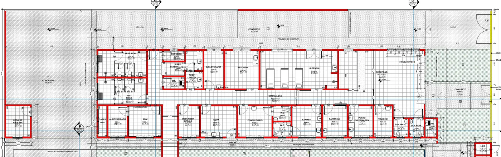

1. Objeto e quadro de áreas
Bloco térreo novo com 26 ambientes (recepção, urgência, repouso, consultório, exames, farmácia, enfermagem, triagem, sanitários, vestiários, apoio), 34,05 × 9,26 m de projeção, mais casa de máquinas de 2,80 × 3,50 m. Estrutura, fechamentos e forro em LSF sobre a base de concreto (fundações e piso) executada por terceiros.
Quadro de áreas
Bloco principal (projeção)318,10 m²
Casa de máquinas9,90 m²
Área total considerada328,00 m²
Parâmetros construtivos
Sistema estruturalLight Steel Frame
Pé-direito3,00 m (adotado — a confirmar nos cortes)
Coberturametálica 20% (por terceiros)
2. Referência de projeto
Imagem · Planta construir e demolir — bloco da ampliação

Planta baixa fornecida pelo cliente — base de referência para os quantitativos desta proposta (paredes a construir em vermelho).